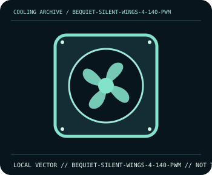

[ INDIVIDUAL COMPONENT // COOLING ]
be quiet! Silent Wings 4 140mm PWM
140 mm PWM case/radiator fan with a fluid-dynamic bearing and up to 1600 rpm.

IDENTIFICATION: Confirm the complete model, revision, included mounting hardware, and host requirements against the manufacturer documentation before installation.
Manufacturer specifications
| Catalog subcategory | Case and radiator fans |
|---|---|
| Exact model | be quiet! Silent Wings 4 140mm PWM |
| Frame | 140 × 140 × 25 mm. |
| Speed and airflow | 500–1600 rpm; up to 77.57 CFM and 13.6 dB(A) maximum sound level, per manufacturer. |
| Control and bearing | 4-pin PWM, 12 V DC, fluid-dynamic bearing. |
| Compatibility | Fits a standard 140 mm fan mount; check screw/clip type on the cooler or case. Use a 4-pin PWM header/controller with adequate current rating. |
Compatibility and installation
Confirm the frame fits the intended 140 mm mount and orient airflow using the frame arrows. Connect the 4-pin plug to a 12 V PWM header; do not treat this model as an RGB fan.
- Disconnect system power before installation or rewiring, and follow the exact model manual.
- After assembly, confirm fan/pump operation and monitor temperatures before sustained workload.
Manufacturer source
- be quiet! — Silent Wings 4 140mm PWM specificationsManufacturer product documentation; check the current model revision, package contents, and local socket kit before purchase or installation.
This static catalog entry is an identification aid, not a compatibility guarantee; fit and ratings can vary by revision, mounting kit, and host configuration.